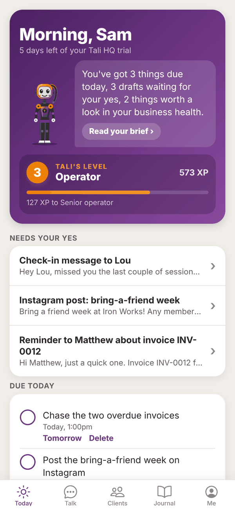
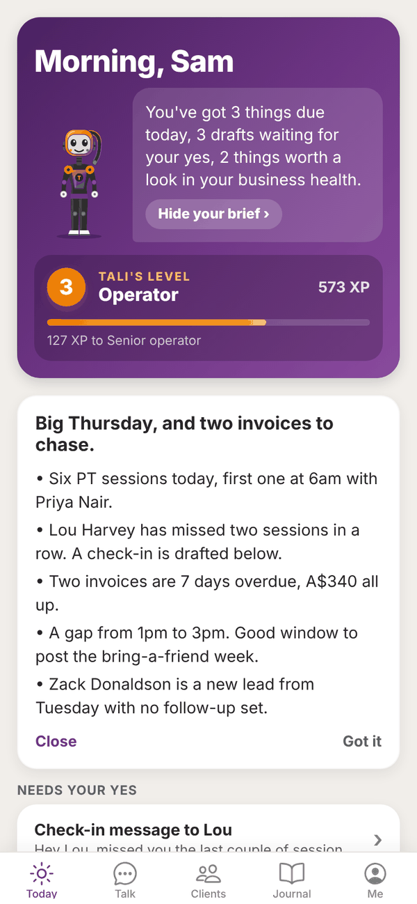
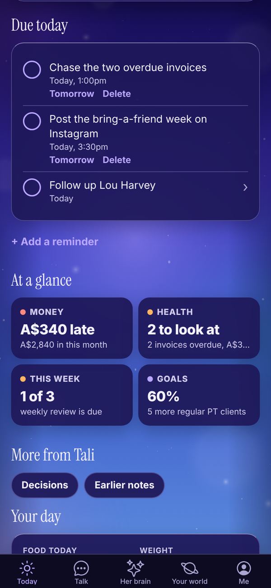
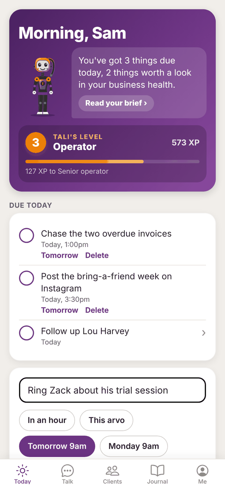
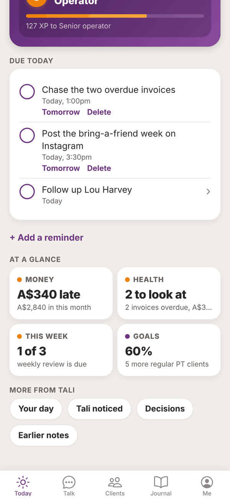
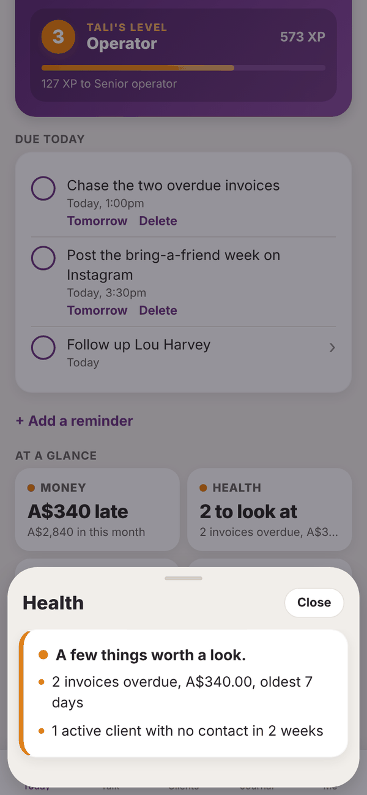
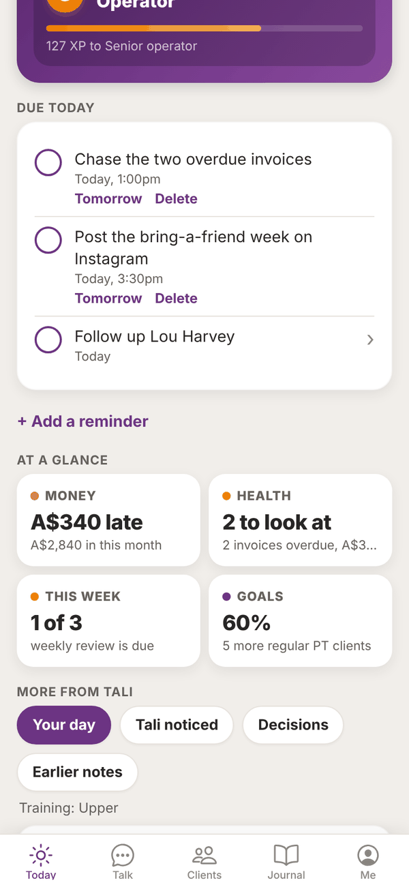

Tali HQ guide
Today and your morning brief
Read your day at a glance, open your morning brief, tick off what's due and add reminders.
Today is the first screen you see. Tali reads your day for you and puts it in one place: what's due, what's waiting for your yes, how the business is going and your brief. Pull down on the screen at any time to refresh it.

The top card#
The purple card at the top has:
- Your greeting: Morning, Afternoon or Evening, with your first name. In the last 30 days of a trial, a line under it says how many days you have left, for example "5 days left of your Tali HQ trial".
- Tali's line: one sentence that sums up the page, like "You've got 3 things due today, 3 drafts waiting for your yes". When nothing is on, she says so.
- Read your brief: shows when today's morning brief has landed. Tali HQ
- Tali's level: her level, name and XP, and how far to the next level. See What Tali knows.
After you shut the day down, this card turns into a night sky. See Shut the day down and night mode.
Your morning brief Tali HQ#
Every morning at the time you pick, Tali writes your brief: what's on your calendar and the free gaps (when connected), emails that need you, reminders and follow-ups due, unpaid or overdue invoices, anything in your business health worth a look, what's waiting for your yes, today's training session if you have a plan, and one nudge.

- Tap Read your brief on the top card.
- The brief opens with its headline and the first three lines. Tap Show all to see the rest, or Close to fold it.
- Tap Got it once you've read it. It then counts as read.
Pick your brief time in Me, Settings, under Morning brief time: any half hour from 5:30am to 9:00am. Each brief uses 1 credit.
Needs your yes#
Anything Tali has drafted for you, like a message, an email, an invoice or a booking, waits here. Tap a draft to open it, then copy it, send it, ask Tali to rework it, or tap Not needed. Full details are on Approvals.
Due today Free#
Reminders and client follow-ups that are due today (or overdue) show here.

- Tap the circle to tick a reminder or follow-up off.
- Under a reminder, tap Tomorrow to move it to 9am tomorrow, or Delete to remove it. Delete asks "Sure?" first, so tap again to confirm.
- Tap a follow-up to open that person. See Clients and leads.
Add a reminder yourself#

- Tap + Add a reminder under Due today.
- Type what to remind you about, for example "Chase Lou about his invoice".
- Pick a time: In an hour, This arvo (3pm, or an hour from now if it's already past 3), Tomorrow 9am, Monday 9am or Next week.
- Tap Remind me.
Adding reminders yourself is free and uses no credits. You can also just tell Tali in Talk: "remind me to call Zack on Friday at 10".
If notifications are on, Tali sends a short notification when a reminder is due.
At a glance#
Up to four tiles with one number each. Tap a tile to slide its full card up from the bottom, and tap Close to put it away.


- Money Tali HQ: what's late, or your runway, or cash in this month. See Money.
- Health Tali HQ: your business health. "All good" or how many things need a look. See below.
- This week Tali HQ: how many of your three promises for the week are done, or that your weekly review is due. See Goals and weekly review.
- Goals Tali HQ: how far along your first goal is.
Tiles only show when there is something in them.
Business health Tali HQ#
Tali checks your business for these, every time you open Today:
- invoices that are overdue (red once the oldest is more than 14 days late)
- client follow-ups that are overdue (red when there are more than 3)
- active clients with no contact in 2 weeks
- new leads with no follow-up set after 2 days
- drafts waiting for your yes more than 2 days
- reminders overdue by more than a day
Twice a day, once in the morning and once in the evening (Sydney time), if anything is amber or red, Tali sends you one notification about it (at most once every 12 hours).
More from Tali#
The quieter things live in a row of chips at the bottom. Tap one to open it.

- Calendar Tali HQ: today's events and free gaps from your connected Google or Outlook calendar.
- Your day Free: food, training and weight. See Food and training.
- Tali noticed Pro: this month's patterns. See What Tali knows.
- Decisions Free: your latest decision. See Decisions.
- Earlier notes Free: older briefs, health checks and Friday check-ins. Tap one to read it in full.
Meeting nudge Tali HQ#
With a calendar connected, if one of today's events matches a client (their email is on the invite, or their name is in the title), Today shows "Meeting" with that person, the time, and the top things Tali knows about them.
New email nudge Tali HQ#
When an email needs you (from your Gmail or Outlook, or sent to Tali's own address on Pro), a card near the top says who it's from. Tap it to open Email. See Tali's email address.
Questions#
Why don't I see a morning brief?
The daily brief is part of the paid plans (and the trial). It lands at the time set in Settings, so if it's earlier than that, it isn't there yet. On Free you get a Friday check-in instead.
Can I change when my brief arrives?
Yes. Me, Settings, Morning brief time, pick a time, then tap Save.
Does ticking off a reminder cost credits?
No. Reminders, ticking things off and adding reminders yourself never use credits.
What does "This arvo" mean?
3pm today. If it's already past 3pm, it sets the reminder for an hour from now.
Why is a tile missing from At a glance?
Tiles only show when they have something to say, and Money, Health, This week and Goals are Tali HQ features. With no goals, there is no Goals tile.
How do I get rid of a reminder I don't need?
Tap Delete under it, then tap again when it says Sure?.